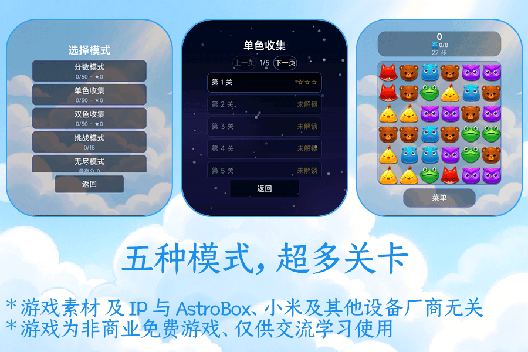

天空消消乐是天空系列里的一款免费三消游戏。它把动物方块、云层和手环的小屏幕放在一起，想玩的时候，抬腕就能消上一局。
交换相邻的方块，凑齐三个或更多相同的动物就能消除。分数、收集、挑战、无尽，每种模式都有不同的目标和节奏。
01
五种模式
分数模式、单色收集、双色收集、挑战模式和无限模式，想认真玩或随便消消都可以。
02
动物方块
小熊、小鸡、奶牛、老鹰、狐狸、青蛙等方块，配上炸弹、整行、整列和彩虹等特殊块。
03
为手环而做
界面、棋盘和操作都针对小屏幕重新排布，滑动手环也能完成交换和消除。
五种模式
- 分数模式 · 50 关
- 单色收集 · 50 关
- 双色收集 · 50 关
- 挑战模式 · 15 关
- 无尽模式 · 冲击最高分
